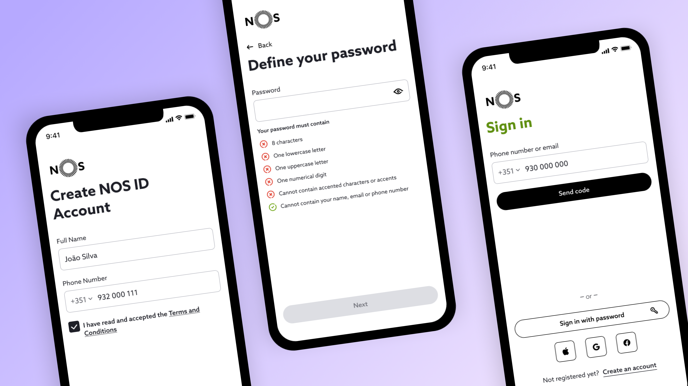
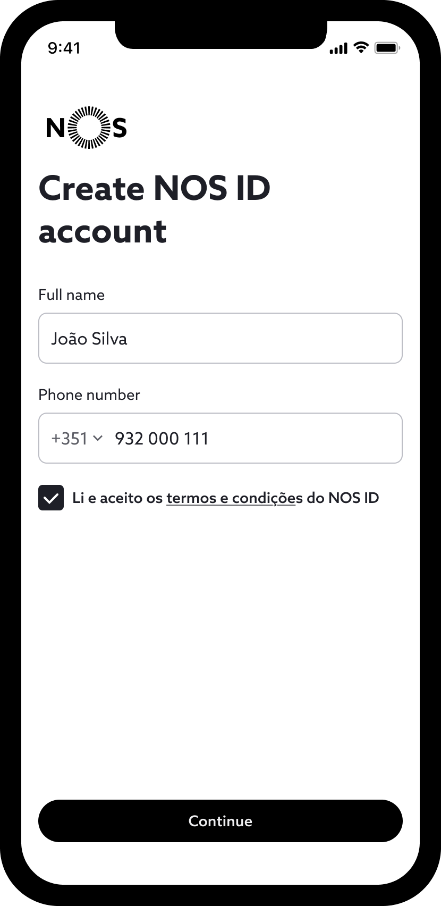
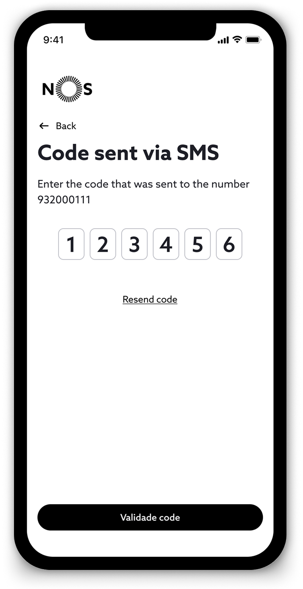
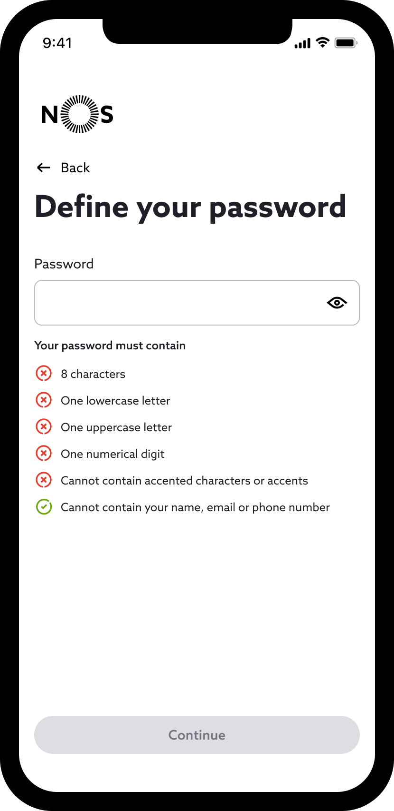
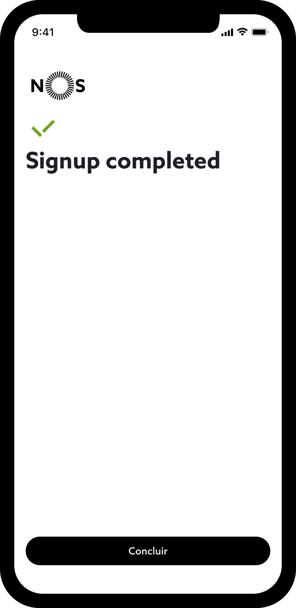
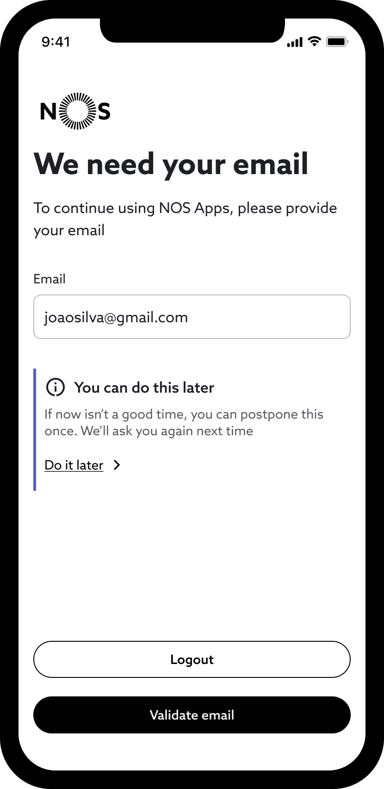

NOS ID — Authentication Redesign
Redesigning authentication for 1 million users across the NOS ecosystem — turning a broken, trust-eroding flow into a seamless passwordless experience.

Context
The product at the centre of it all
NOS ID is the single sign-on platform connecting all NOS digital products — apps, account management, and TV services. It acts as the entry point for over 1 million users. Every NOS customer who creates an account, resets a password, or logs in to a digital service touches this system. When it fails, every downstream product fails with it.
The Problem
Only 1 in 4 users made it through
The previous version of NOS ID registration flow was failing users at every turn. Only 25% of users who started the signup process actually completed it — meaning NOS was losing three quarters of potential customers before they ever touched a product.
The experience felt confusing, unpredictable, and at times untrustworthy. Users weren't sure what step they were on, why they were being asked for information, or whether their data was safe. For a telecom's primary digital identity product, this was a critical failure.
"Users got lost in the process — and abandoned it."
What the data showed
- Drop-offs across multiple steps, not just one
- Both email and phone validation required on the same page — compounding friction
- App crashed when users navigated away to their email client mid-flow
- Poor error handling — no recovery paths for failed validation
- No sense of progress through the flow
- Trust signals absent throughout
My Role
End-to-end ownership
Lead Product Designer with full end-to-end ownership — from initial research and problem framing through to production-ready specifications. Working in close collaboration with product management, engineering, and the security team throughout.
Process
How I approached the problem
Analytics Deep Dive
Mapped every drop-off point in the funnel to understand precisely where and why users were abandoning.
User Research
Qualitative sessions to surface the emotional responses — confusion, distrust, frustration — behind the numbers.
Problem Mapping
Synthesised findings into a clear problem map addressing root causes, not just symptoms on the surface.
Iteration & Testing
Multiple rounds of prototyping and usability testing, with security review embedded throughout the process.
Final Design
Production-ready specifications for mobile and desktop, with a complete component system for auth patterns.
Key Insights
What research revealed
Clarity was missing
Users didn't know what to do next. Each step raised questions rather than answering them — next actions were ambiguous and context was absent at every turn.
Trust was fragile
The flow felt unsafe or suspicious. Generic error states, inconsistent branding, and missing trust signals made users question whether they were on a legitimate NOS page.
Complexity was front-loaded
Too much was asked too early. Users were confronted with dense forms and complex choices before they'd built any confidence in the experience.
Design Principles
Three principles. Every decision.
Clarity at every step
Every screen answers one question: what do I do now? Instructions are explicit, progress is always visible, and nothing is left to assumption. If a user has to think, we've already failed.
Build trust continuously
Trust isn't a single screen — it's a thread running through the entire experience. NOS branding, security cues, reassuring copy, and predictable behaviour present from the very first interaction.
Progressive disclosure
Complexity is earned, not imposed. Start with the minimum needed. Reveal detail only when the user is ready for it — reducing cognitive load at every stage of the journey.
The Solution
A complete authentication system
Three authentication paths — each designed for a different user need, all built on the same clarity-first principles.
Passwordless
One-time code delivered to email or phone. No password to remember, reduced attack surface, and the lowest friction entry point for new users.
Password
Traditional email and password login, retained for users who prefer or require it. The same clarity-first interaction patterns applied throughout the full flow.
Passkey
Device-based authentication using biometrics or screen lock. No password required, phishing-resistant, and designed for both security and seamless access.
Deep Dive
The new signup flow
Registration redesigned as five clear, purposeful steps — each one earning the right to ask for the next piece of information.
The original flow required users to validate both their email address and phone number before completing signup. Analytics showed this was a primary drop-off point — and a technical crash when users left the app to open their email client compounded the problem. The new flow removes email validation from the critical path entirely: users go start to finish using SMS only. Email can be verified later, at a lower-stakes moment.
Provide details
We start with just the essentials—name and phone number—to reduce friction. Email is intentionally deferred, allowing users to complete signup without switching contexts, a common pain point in webview-based flows.

Validate phone number
Fast and seamless verification. The code input is auto-focused and, on mobile, auto-filled from the SMS—removing the need to switch apps or manually copy the code, helping reduce drop-off during verification.

Set up password
Guided password creation with real-time feedback. Requirements are visible upfront and update as the user types, reducing guesswork and preventing errors before submission.

Signup completed
Clear confirmation with immediate continuation. Users are seamlessly routed back to the app, maintaining momentum without unnecessary steps.

Email requested later
Email collection is intentionally delayed by at least 2 days to reduce initial friction. After users engage with the app and return, they're more likely to provide it — supporting higher completion rates while still meeting business and security needs, including mitigating user enumeration risks.

Security UX
Security without sacrificing usability
Deliberate anti-enumeration UX patterns were designed in close collaboration with the security team — preventing account discovery attacks while keeping the experience clear and trustworthy for legitimate users.
The Vulnerability
Traditional auth flows leak information. "This email isn't registered" or "Incorrect password" tells attackers exactly which accounts exist — and which don't. A simple probe can map an entire user base.
The Design Decision
Responses for valid and invalid email addresses are intentionally identical — the same flow, the same language, the same timing. No difference to probe or exploit. Security enforced through design, not just code.
The Balance
Registered users flow through naturally. Unregistered users are guided to create an account without ever knowing they triggered a security mechanism. Both paths feel equally smooth and deliberate.
Cross-Platform
Designed once. Adapted to context.
Mobile First
Designed for mobile — the primary device for NOS ID registrations. The core experience starts here
Desktop, Expanded
Scales to desktop with a wider layout while preserving the same flow, interactions, and visual language.
QR-Based TV Access
Enables authentication on STB through QR code scanning, creating a seamless bridge between TV and mobile.
Outcomes
The numbers tell the story
Reflection
What this project taught me
Security and UX aren't opposites
Working closely with the security team showed me that the best security UX is invisible. The constraints of anti-enumeration design actually pushed the experience toward greater clarity — the result was simultaneously more secure and more usable.
Clarity Drives Success
Improving success from 25% to 95% required a clear view of the entire user journey and a deep understanding of hardware constraints .
Trust is as important as usability
A usable flow that doesn't feel trustworthy will still be abandoned. Authentication is one of the few moments where users are actively assessing whether they're being deceived — designing for trust was every bit as critical as designing for ease.
Gallery